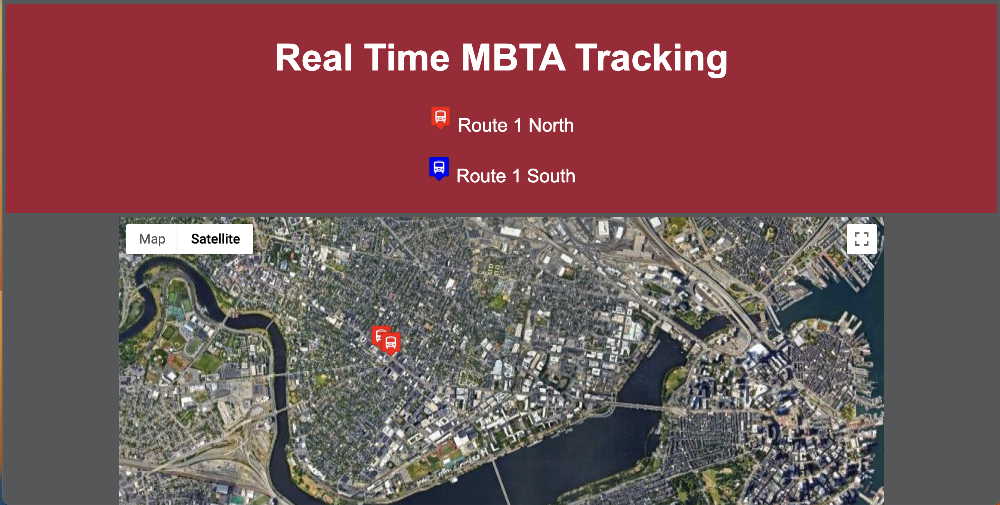

PacMan image moving left and right across the width of the page. Two buttons above it to spawn more PacMen on the screen and to start the movement of those PacMen which bounce around the screen.
GitHub RepositoryCheck it out!

Displays a webpage that is styled to look like Elmo with two animated eyes. When the mouse moves, the pupils follow the movement of the mouse pointer.
GitHub RepositoryCheck it Out!

Check it out!
Displays a Google Map interface with the route 1 north and south bus locations of the MBTA. The markers update every 15 seconds.
GitHub RepositoryCheck it out!